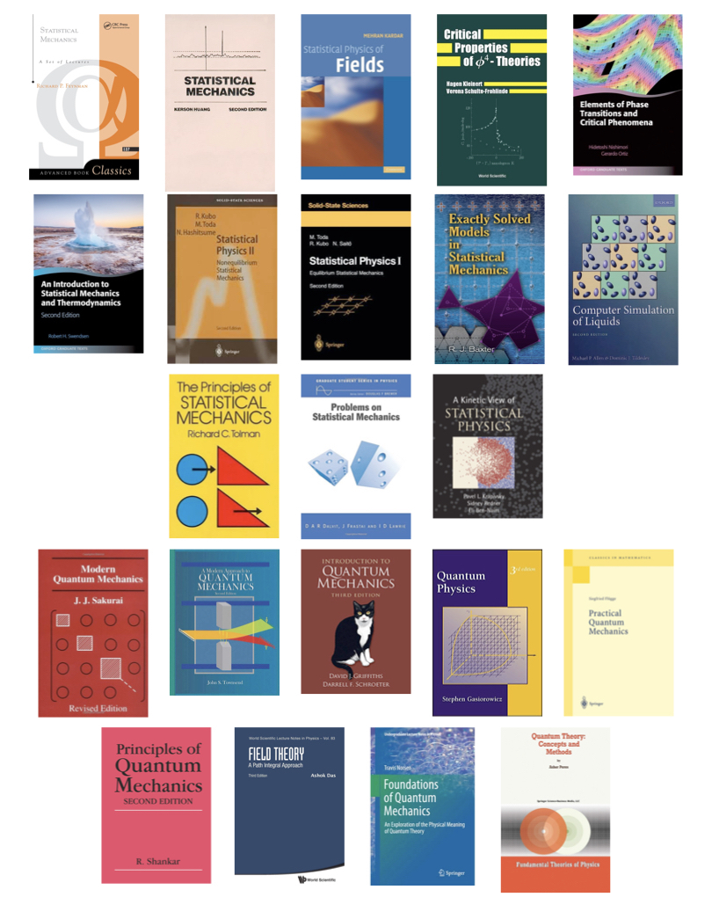

Books on quantum mechanics and statistical mechanics

Statistical mechanics
- Feynman's "Statistical Mechanics" is a good book—but the beginning is spectacular. He puts the partition function in the place it deserves.
- Kerson Huang's "Statistical Mechanics" is broad and concise. I especially loved the chapter on the general properties of the partition function for its discussion on the zeroes of the partition function and phase transition.
- On the field-theoretic formulation of critical phenomena, the best book, in my opinion, is Mehran Kardar's "Statistical Physics of Fields." The chapters on the perturbative renormalization group of \(\phi^4\) theories are superb.
- I should mention that if you're actually trying to calculate higher-order Feynman diagrams, Kleinert and Schulte-Frohlinde's "Critical Properties of \(\phi^4\)-Theories" is the reference you need.
- Also, in this connection, I found a neat discussion on mean field theories (particularly \(\phi^6\) theory related to tricritical points) in Nishimori and Ortiz's "Elements of Phase Transitions and Critical Phenomena."
- I bought R. Swendsen's "An Introduction to Statistical Mechanics and Thermodynamics" fairly recently. It's a great book and, unusually, starts with detailed discussions on entropy. (The book has slightly unwieldy, verbose notations, but I think explicit notations help.)
- Ryogo Kubo's statistical mechanics books are some of the most didactic books I've ever read. Very much recommended.
- I read Onsager's solution of the 2D Ising model during masters (along with its complete solution 😱). It's not easy, but if you really need to know about exactly solvable models, I think the best resource is Rodney Baxter's "Exactly Solved Models in Statistical Mechanics."
- For numerical approaches in stat mech, I liked D. J. Tildesley and M.P. Allen's "Computer Simulation of Liquids" most for its clean, accessible discussions (for instance, check the discussion on ensembles in MD simulations.)
- A book that I read only a bit—but was thoroughly impressed by its depth—is Richard Tolman's "The Principles of Statistical Mechanics." Have to read it sometime in the future…
- Dalvit, Frastai, and Lawrie's "Problems on Statistical Mechanics" is excellent (more so because it comes with solutions. 😄) Check it if you want to know, for example, under which conditions bosons with a \(p^s\) dispersion relation in \(d\)-dimensions will form a condensate…🙂
- Finally, on nonequilibrium stat mech, I liked reading Pavel Krapivsky, Sidney Redner, and Eli Ben-Naim's "Kinetic View of Statistical Physics." The chapters on aggregation, fragmentation, and adsorption are particularly good.
Quantum mechanics
- For me, the best graduate-level QM book is Sakurai's "Modern Quantum Mechanics." Precise and concise. (And the exercises are very carefully designed.)
- I like to think John Townsend's excellent "A Modern Approach to Quantum Mechanics" as an easier version of Sakurai's book. However, it is costly. Not sure why…
- Griffiths's "Introduction to Quantum Mechanics" is a good undergrad-level QM textbook. The chapter on solutions to time-independent Schrödinger equation is neat. (Though, for learning formalism, I prefer Sakurai's book.)
- Another undergrad-level QM book I liked is Stephen Gasiorowicz's "Quantum Physics." It's at the level of Griffiths's and comes with many detailed examples. Though not as popular, it provides a solid introduction.
- "Practical quantum mechanics" by Siegfried Flügge teaches QM through problem-solving. It's not easy, but by solving its problems, you can learn a lot and gain confidence.
- I love R. Shankar's graduate-level "Principles of Quantum Mechanics." The chapters on rotational invariance, addition of angular momenta, scattering theory, and path integral are particularly good.
- I would like to mention that for the path integral formalism of QM, the first few chapters of Ashok Das's "Field Theory: A Path Integral Approach" provide a pedagogic introduction.
- Only recently, I started reading about the foundations of QM. It's a great subject—until you want to publish. 😀 So far, I liked two books. The first one is "Foundations of Quantum Mechanics" by Travis Norsen. Very accessible (though I found it slightly opinionated)
- The second one is "Quantum Theory: Concepts and Methods" by Asher Peres. I've bought it recently and read only a bit. It goes deep into QM and is easily the most difficult of all the books I mentioned. Very rewarding, though.